<!DOCTYPE HTML>
<html lang="en" class="sidebar-visible no-js light">
    <head>
        <!-- Book generated using mdBook -->
        <meta charset="UTF-8">
        <title>Image Applications - ImportantArticles</title>
        <!-- Custom HTML head -->
        <meta content="text/html; charset=utf-8" http-equiv="Content-Type">
        <meta name="description" content="The note of Important Articles">
        <meta name="viewport" content="width=device-width, initial-scale=1">
        <meta name="theme-color" content="#ffffff" />

        <link rel="icon" href="../favicon.svg">
        <link rel="shortcut icon" href="../favicon.png">
        <link rel="stylesheet" href="../css/variables.css">
        <link rel="stylesheet" href="../css/general.css">
        <link rel="stylesheet" href="../css/chrome.css">
        <link rel="stylesheet" href="../css/print.css" media="print">
        <!-- Fonts -->
        <link rel="stylesheet" href="../FontAwesome/css/font-awesome.css">
        <link rel="stylesheet" href="../fonts/fonts.css">
        <!-- Highlight.js Stylesheets -->
        <link rel="stylesheet" href="../highlight.css">
        <link rel="stylesheet" href="../tomorrow-night.css">
        <link rel="stylesheet" href="../ayu-highlight.css">

        <!-- Custom theme stylesheets -->
        <link rel="stylesheet" href="../theme/pagetoc.css">
        <!-- MathJax -->
        <script async type="text/javascript" src="https://cdnjs.cloudflare.com/ajax/libs/mathjax/2.7.1/MathJax.js?config=TeX-AMS-MML_HTMLorMML"></script>
    </head>
    <body>
        <!-- Provide site root to javascript -->
        <script type="text/javascript">
            var path_to_root = "../";
            var default_theme = window.matchMedia("(prefers-color-scheme: dark)").matches ? "navy" : "light";
        </script>

        <!-- Work around some values being stored in localStorage wrapped in quotes -->
        <script type="text/javascript">
            try {
                var theme = localStorage.getItem('mdbook-theme');
                var sidebar = localStorage.getItem('mdbook-sidebar');

                if (theme.startsWith('"') && theme.endsWith('"')) {
                    localStorage.setItem('mdbook-theme', theme.slice(1, theme.length - 1));
                }

                if (sidebar.startsWith('"') && sidebar.endsWith('"')) {
                    localStorage.setItem('mdbook-sidebar', sidebar.slice(1, sidebar.length - 1));
                }
            } catch (e) { }
        </script>

        <!-- Set the theme before any content is loaded, prevents flash -->
        <script type="text/javascript">
            var theme;
            try { theme = localStorage.getItem('mdbook-theme'); } catch(e) { }
            if (theme === null || theme === undefined) { theme = default_theme; }
            var html = document.querySelector('html');
            html.classList.remove('no-js')
            html.classList.remove('light')
            html.classList.add(theme);
            html.classList.add('js');
        </script>

        <!-- Hide / unhide sidebar before it is displayed -->
        <script type="text/javascript">
            var html = document.querySelector('html');
            var sidebar = 'hidden';
            if (document.body.clientWidth >= 1080) {
                try { sidebar = localStorage.getItem('mdbook-sidebar'); } catch(e) { }
                sidebar = sidebar || 'visible';
            }
            html.classList.remove('sidebar-visible');
            html.classList.add("sidebar-" + sidebar);
        </script>

        <nav id="sidebar" class="sidebar" aria-label="Table of contents">
            <div class="sidebar-scrollbox">
                <ol class="chapter"><li class="chapter-item expanded affix "><div>Important Articles</div></li><li class="chapter-item expanded "><a href="../index.html"><strong aria-hidden="true">1.</strong> Introduction</a></li><li class="chapter-item expanded "><a href="../ReadPapers.html"><strong aria-hidden="true">2.</strong> 如何高效读论文</a></li><li class="chapter-item expanded "><div><strong aria-hidden="true">3.</strong> Daniel Holden’s Blog</div></li><li><ol class="section"><li class="chapter-item expanded "><a href="../DanielHolden’sBlog/PerfectTrackingwithSprings.html"><strong aria-hidden="true">3.1.</strong> Perfect Tracking with Springs</a></li><li class="chapter-item expanded "><a href="../DanielHolden’sBlog/CubicInterpolationofQuaternions.html"><strong aria-hidden="true">3.2.</strong> Cubic Interpolation of Quaternions</a></li><li class="chapter-item expanded "><a href="../DanielHolden’sBlog/CreatingLoopingAnimationsfromMotionCapture.html"><strong aria-hidden="true">3.3.</strong> Creating Looping Animations from Motion Capture</a></li><li class="chapter-item expanded "><a href="../DanielHolden’sBlog/ExponentialMapAngleAxisandAngularVelocity.html"><strong aria-hidden="true">3.4.</strong> Exponential Map,Angle Axis, and Angular Velocity</a></li><li class="chapter-item expanded "><a href="../DanielHolden’sBlog/Spring-It-OnTheGameDeveloper'sSpring-Roll-Call.html"><strong aria-hidden="true">3.5.</strong> Spring-It-On: The Game Developer's Spring-Roll-Call</a></li><li class="chapter-item expanded "><a href="../DanielHolden’sBlog/InertializationTransitionCost.html"><strong aria-hidden="true">3.6.</strong> Inertialization Transition Cost</a></li><li class="chapter-item expanded "><a href="../DanielHolden’sBlog/ScalarVelocity.html"><strong aria-hidden="true">3.7.</strong> Scalar Velocity</a></li><li class="chapter-item expanded "><a href="../DanielHolden’sBlog/JointLimits.html"><strong aria-hidden="true">3.8.</strong> Joint Limits</a></li><li class="chapter-item expanded "><a href="../DanielHolden’sBlog/VisualizingRotationSpaces.html"><strong aria-hidden="true">3.9.</strong> Visualizing Rotation Spaces</a></li></ol></li><li class="chapter-item expanded "><div><strong aria-hidden="true">4.</strong> 李宏毅 - Diffusion Model</div></li><li><ol class="section"><li class="chapter-item expanded "><a href="../李宏毅DiffusionModel/DiffusionModel.html"><strong aria-hidden="true">4.1.</strong> Diffusion Model 是如何運作的</a></li><li class="chapter-item expanded "><a href="../李宏毅DiffusionModel/StableDiffusion.html"><strong aria-hidden="true">4.2.</strong> Stable Diffusion</a></li><li class="chapter-item expanded "><a href="../李宏毅DiffusionModel/DiffusionModel背后的数掌原理.html"><strong aria-hidden="true">4.3.</strong> Diffusion Model背后的数掌原理</a></li></ol></li><li class="chapter-item expanded "><a href="../diffusion-tutorial-part/Introduction.html"><strong aria-hidden="true">5.</strong> CVPR Tutorial - Denoising Diffusion Models: A Generative Learning Big Bang</a></li><li><ol class="section"><li class="chapter-item expanded "><div><strong aria-hidden="true">5.1.</strong> Fundamentals</div></li><li><ol class="section"><li class="chapter-item expanded "><a href="../diffusion-tutorial-part/Fundamentals/DenoisingDiffusionProbabilisticModels.html"><strong aria-hidden="true">5.1.1.</strong> Denoising Diffusion Probabilistic Models</a></li><li class="chapter-item expanded "><a href="../diffusion-tutorial-part/Fundamentals/Score-basedGenerativeModelingwithDifferentialEquations.html"><strong aria-hidden="true">5.1.2.</strong> Score-based Generative Modeling with Differential Equations</a></li><li class="chapter-item expanded "><a href="../diffusion-tutorial-part/Fundamentals/AcceleratedSampling.html"><strong aria-hidden="true">5.1.3.</strong> Accelerated Sampling</a></li><li class="chapter-item expanded "><a href="../diffusion-tutorial-part/Fundamentals/ConditionalGenerationandGuidance.html"><strong aria-hidden="true">5.1.4.</strong> Conditional Generation and Guidance</a></li><li class="chapter-item expanded "><a href="../diffusion-tutorial-part/Fundamentals/Summary.html"><strong aria-hidden="true">5.1.5.</strong> Summary</a></li></ol></li><li class="chapter-item expanded "><a href="../diffusion-tutorial-part/diffusiontutorialpart2.html" class="active"><strong aria-hidden="true">5.2.</strong> Image Applications</a></li><li class="chapter-item expanded "><a href="../diffusion-tutorial-part/diffusiontutorialpart3.html"><strong aria-hidden="true">5.3.</strong> Applications on other domains</a></li></ol></li><li class="chapter-item expanded "><div><strong aria-hidden="true">6.</strong> Mike Shou - Video Diffusion Models</div></li><li><ol class="section"><li class="chapter-item expanded "><a href="../MikeShou-VideoDiffusionModels/MikeShou.html"><strong aria-hidden="true">6.1.</strong> Background</a></li><li class="chapter-item expanded "><a href="../MikeShou-VideoDiffusionModels/FundamentalsofDiffusionModels.html"><strong aria-hidden="true">6.2.</strong> Fundamentals of Diffusion Models</a></li><li class="chapter-item expanded "><a href="../MikeShou-VideoDiffusionModels/VideoGeneration.html"><strong aria-hidden="true">6.3.</strong> Video Generation</a></li><li><ol class="section"><li class="chapter-item expanded "><a href="../MikeShou-VideoDiffusionModels/VideoGeneration/Pioneeringearlyworks.html"><strong aria-hidden="true">6.3.1.</strong> Pioneering/early works</a></li><li class="chapter-item expanded "><a href="../MikeShou-VideoDiffusionModels/VideoGeneration/Open-sourcebasemodels.html"><strong aria-hidden="true">6.3.2.</strong> Open-source base models</a></li><li class="chapter-item expanded "><a href="../MikeShou-VideoDiffusionModels/VideoGeneration/Otherclosed-sourceworks.html"><strong aria-hidden="true">6.3.3.</strong> Other closed-source works</a></li><li class="chapter-item expanded "><a href="../MikeShou-VideoDiffusionModels/VideoGeneration/Trainingefficienttechniques.html"><strong aria-hidden="true">6.3.4.</strong> Training-efficient techniques</a></li><li class="chapter-item expanded "><a href="../MikeShou-VideoDiffusionModels/VideoGeneration/Storyboard.html"><strong aria-hidden="true">6.3.5.</strong> Storyboard</a></li><li class="chapter-item expanded "><a href="../MikeShou-VideoDiffusionModels/VideoGeneration/Longvideogeneration.html"><strong aria-hidden="true">6.3.6.</strong> Long video generation</a></li><li class="chapter-item expanded "><a href="../MikeShou-VideoDiffusionModels/VideoGeneration/Multimodal-guidedgeneration.html"><strong aria-hidden="true">6.3.7.</strong> Multimodal-guided generation</a></li></ol></li><li class="chapter-item expanded "><a href="../MikeShou-VideoDiffusionModels/VideoEditing.html"><strong aria-hidden="true">6.4.</strong> Video Editing</a></li><li><ol class="section"><li class="chapter-item expanded "><a href="../MikeShou-VideoDiffusionModels/VideoEditing/Tuning-based.html"><strong aria-hidden="true">6.4.1.</strong> Tuning-based</a></li><li class="chapter-item expanded "><a href="../MikeShou-VideoDiffusionModels/VideoEditing/Training-free.html"><strong aria-hidden="true">6.4.2.</strong> Training-free</a></li><li class="chapter-item expanded "><a href="../MikeShou-VideoDiffusionModels/VideoEditing/ControlledEdifng.html"><strong aria-hidden="true">6.4.3.</strong> Controlled Edifng</a></li><li class="chapter-item expanded "><a href="../MikeShou-VideoDiffusionModels/VideoEditing/3D-Aware.html"><strong aria-hidden="true">6.4.4.</strong> 3D-Aware</a></li><li class="chapter-item expanded "><a href="../MikeShou-VideoDiffusionModels/VideoEditing/OtherGuidance.html"><strong aria-hidden="true">6.4.5.</strong> Other Guidance</a></li></ol></li></ol></li><li class="chapter-item expanded "><a href="../LargeMultimodalModelsNotesonCVPR2023Tutorial.html"><strong aria-hidden="true">7.</strong> Large Multimodal Models Notes on CVPR 2023 Tutorial</a></li></ol>
            </div>
            <div id="sidebar-resize-handle" class="sidebar-resize-handle"></div>
        </nav>

        <div id="page-wrapper" class="page-wrapper">

            <div class="page">
                <div id="menu-bar-hover-placeholder"></div>
                <div id="menu-bar" class="menu-bar sticky bordered">
                    <div class="left-buttons">
                        <button id="sidebar-toggle" class="icon-button" type="button" title="Toggle Table of Contents" aria-label="Toggle Table of Contents" aria-controls="sidebar">
                            <i class="fa fa-bars"></i>
                        </button>
                        <button id="theme-toggle" class="icon-button" type="button" title="Change theme" aria-label="Change theme" aria-haspopup="true" aria-expanded="false" aria-controls="theme-list">
                            <i class="fa fa-paint-brush"></i>
                        </button>
                        <ul id="theme-list" class="theme-popup" aria-label="Themes" role="menu">
                            <li role="none"><button role="menuitem" class="theme" id="light">Light (default)</button></li>
                            <li role="none"><button role="menuitem" class="theme" id="rust">Rust</button></li>
                            <li role="none"><button role="menuitem" class="theme" id="coal">Coal</button></li>
                            <li role="none"><button role="menuitem" class="theme" id="navy">Navy</button></li>
                            <li role="none"><button role="menuitem" class="theme" id="ayu">Ayu</button></li>
                        </ul>
                        <button id="search-toggle" class="icon-button" type="button" title="Search. (Shortkey: s)" aria-label="Toggle Searchbar" aria-expanded="false" aria-keyshortcuts="S" aria-controls="searchbar">
                            <i class="fa fa-search"></i>
                        </button>
                    </div>

                    <h1 class="menu-title">ImportantArticles</h1>

                    <div class="right-buttons">
                        <a href="../print.html" title="Print this book" aria-label="Print this book">
                            <i id="print-button" class="fa fa-print"></i>
                        </a>
                        <a href="https://github.com/CaterpillarStudyGroup/ImportantArticles" title="Git repository" aria-label="Git repository">
                            <i id="git-repository-button" class="fa fa-github"></i>
                        </a>
                    </div>
                </div>

                <div id="search-wrapper" class="hidden">
                    <form id="searchbar-outer" class="searchbar-outer">
                        <input type="search" id="searchbar" name="searchbar" placeholder="Search this book ..." aria-controls="searchresults-outer" aria-describedby="searchresults-header">
                    </form>
                    <div id="searchresults-outer" class="searchresults-outer hidden">
                        <div id="searchresults-header" class="searchresults-header"></div>
                        <ul id="searchresults">
                        </ul>
                    </div>
                </div>
                <!-- Apply ARIA attributes after the sidebar and the sidebar toggle button are added to the DOM -->
                <script type="text/javascript">
                    document.getElementById('sidebar-toggle').setAttribute('aria-expanded', sidebar === 'visible');
                    document.getElementById('sidebar').setAttribute('aria-hidden', sidebar !== 'visible');
                    Array.from(document.querySelectorAll('#sidebar a')).forEach(function(link) {
                        link.setAttribute('tabIndex', sidebar === 'visible' ? 0 : -1);
                    });
                </script>

                <div id="content" class="content">
                    <main><div class="sidetoc"><nav class="pagetoc"></nav></div>
                        <h1 id="diffusion-model-architectures"><a class="header" href="#diffusion-model-architectures">Diffusion model architectures</a></h1>
<p>P4</p>
<h2 id="architecture"><a class="header" href="#architecture">Architecture</a></h2>
<p>P5</p>
<h3 id="u-net-based-diffusion-architecture"><a class="header" href="#u-net-based-diffusion-architecture">U-Net Based Diffusion Architecture</a></h3>
<h4 id="u-net-architecture"><a class="header" href="#u-net-architecture">U-Net Architecture</a></h4>
<p> </p>
<blockquote>
<p>✅ U-Net的是Large Scale Image Diffusion Model中最常用的backbone。</p>
</blockquote>
<blockquote>
<p>🔎 Ronneberger et al., <u>“U-Net: Convolutional Networks for Biomedical Image Segmentation”, </u>MICCAI 2015</p>
</blockquote>
<h4 id="pipeline"><a class="header" href="#pipeline">Pipeline</a></h4>
<p> </p>
<blockquote>
<p>✅ 包含Input、U-Net backbone、Condition。<br />
✅ Condition 通常用 Concat 或 Cross attention 的方式与 Content 相结合。</p>
</blockquote>
<blockquote>
<p>🔎 Rombach et al., <u>&quot;High-Resolution Image Synthesis with Latent Diffusion Models&quot;,</u> CVPR 2022</p>
</blockquote>
<p>U-Net Based Diffusion Architecture</p>
<p>P6</p>
<h4 id="application"><a class="header" href="#application">Application</a></h4>
<p><strong>Imagen</strong> Saharia et al.</p>
<p>Saharia et al. <u>“Photorealistic text-to-image diffusion models with deep language understanding”, </u>NeurIPS 2022</p>
<p><strong>Stable Diffusion</strong> Rombach et al.</p>
<p>Rombach et al., <u>&quot;High-Resolution Image Synthesis with Latent Diffusion Models&quot;, </u>CVPR 2022</p>
<p><strong>eDiff-I</strong> Balaji et al.</p>
<p>Balaji et al.,” <u>ediffi: Text-to-image diffusion models with an ensemble of expert denoisers”, </u>arXiv 2022</p>
<p>P7</p>
<h3 id="transformer-architecture"><a class="header" href="#transformer-architecture">Transformer Architecture</a></h3>
<h4 id="vision-transformervit"><a class="header" href="#vision-transformervit">Vision Transformer(ViT)</a></h4>
<p> </p>
<p>Dosovitskiy et al., <u>“An image is worth 16x16 words: Transformers for image recognition at scale”, </u>ICLR 2021</p>
<h4 id="pipeline-1"><a class="header" href="#pipeline-1">Pipeline</a></h4>
<p> </p>
<blockquote>
<p>✅ 特点：<br />
✅ 1. 把 image patches 当作 token.<br />
✅ 2. 在 Shallow layer 与 deep layer 之间引入 long skip connection.</p>
</blockquote>
<p>Bao et al.,<u> &quot;All are Worth Words: a ViT Backbone for Score-based Diffusion Models&quot;, </u>arXiv 2022</p>
<p>P8</p>
<h4 id="application-1"><a class="header" href="#application-1">Application</a></h4>
<p>Peebles and Xie, <u>&quot;Scalable Diffusion Models with Transformers&quot;, </u>arXiv 2022<br />
Bao et al., <u>&quot;One Transformer Fits All Distributions in Multi-Modal Diffusion at Scale&quot;, </u>arXiv 2023<br />
Hoogeboom et al., <u>&quot;simple diffusion: End-to-end diffusion for high resolution images&quot;, </u>arXiv 2023</p>
<p>P9</p>
<h1 id="image-editing-and-customization-with-diffusion-models"><a class="header" href="#image-editing-and-customization-with-diffusion-models">Image editing and customization with diffusion models</a></h1>
<p>P10</p>
<h2 id="sdedit"><a class="header" href="#sdedit">SDEdit</a></h2>
<p>Meng et al., <u>&quot;SDEdit: Guided Image Synthesis and Editing with Stochastic Differential Equations&quot;, </u>ICLR 2022 </p>
<h3 id="guided-synthesisediting-task"><a class="header" href="#guided-synthesisediting-task">guided synthesis／editing Task</a></h3>
<p>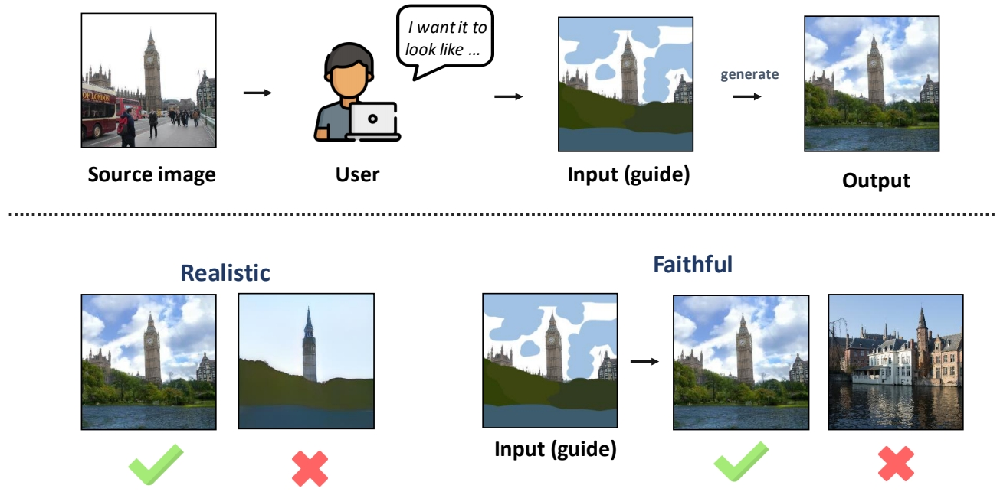 </p>
<blockquote>
<p>✅ 过去的 guided synthesis／editing 任务是用 GAN based 方法实现的。</p>
</blockquote>
<p>P12</p>
<h3 id="pipeline-2"><a class="header" href="#pipeline-2">Pipeline</a></h3>
<p>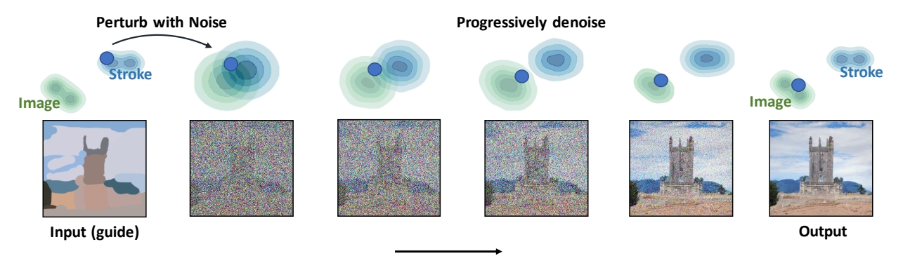 </p>
<p><strong>Gradually projects the input to the manifold of natural images.</strong></p>
<blockquote>
<p>准备工作：一个预训练好的Image Diffusion Model<br />
第一步：perturb the input with <strong>Gaussian noise</strong><br />
第二步：progressively remove the noise using a pretrained diffusion model.<br />
[?] 怎样保证Denoise的图像与原始图像有高度的一致性？</p>
</blockquote>
<h3 id="特点"><a class="header" href="#特点">特点</a></h3>
<blockquote>
<p>只需要一个预训练模型，不需要额外的finetune。</p>
</blockquote>
<p>P13</p>
<h3 id="其它应用场景"><a class="header" href="#其它应用场景">其它应用场景</a></h3>
<h4 id="fine-grained-control-using-strokes"><a class="header" href="#fine-grained-control-using-strokes">Fine-grained control using strokes</a></h4>
<p> </p>
<blockquote>
<p>可以在Image上加上草图，也可以直接使用草图生成图像</p>
</blockquote>
<p>P16</p>
<h4 id="image-compositing"><a class="header" href="#image-compositing">Image compositing</a></h4>
<p> </p>
<blockquote>
<p>把上面图的指定pixel patches应用到下面图上。<br />
SDEdit的结果更合理且与原图更像。</p>
</blockquote>
<p>P17</p>
<h3 id="效率提升"><a class="header" href="#效率提升">效率提升</a></h3>
<p>Efficient Spatially Sparse Inference for Conditional GANs and Diffusion Models</p>
<p>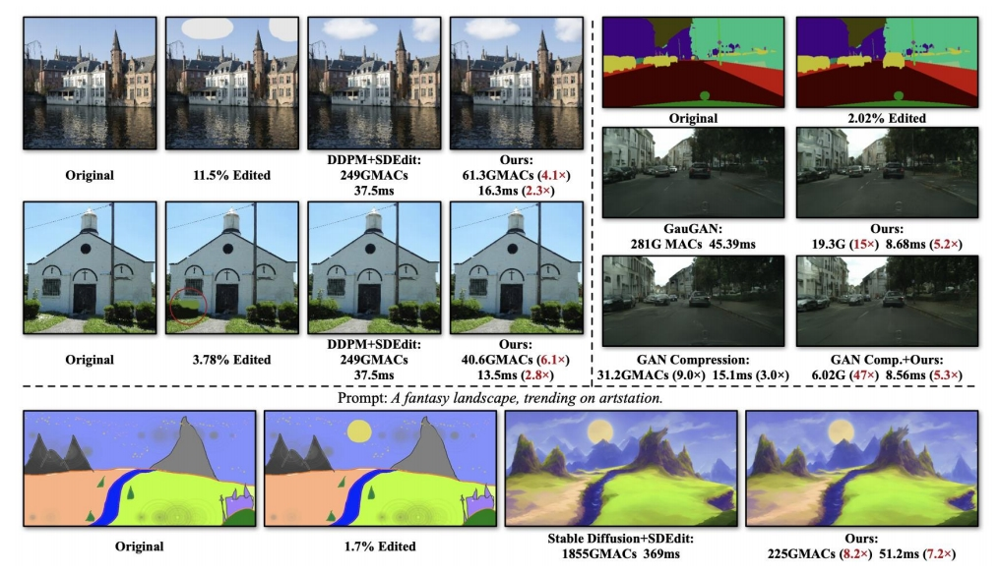 </p>
<p>原理：全图生成速度比较慢，因此针对被编辑区域进行部分生成。</p>
<p>Li et al., <u>&quot;Efficient Spatially Sparse Inference for Conditional GANs and Diffusion Models&quot;, </u>NeurIPS 2022</p>
<p>P18</p>
<h2 id="style-transfer-with-ddim-inversion"><a class="header" href="#style-transfer-with-ddim-inversion">Style Transfer with DDIM inversion</a></h2>
<h3 id="recap-ddim-inversion"><a class="header" href="#recap-ddim-inversion">Recap DDIM Inversion</a></h3>
<p> </p>
<p>Song et al., <u>&quot;Denoising Diffusion Implicit Models&quot;,</u> ICLR 2021</p>
<blockquote>
<p>✅ DDIM 方法中，从 noise 到图像的映射关系是确定的。同样也可以让图像与 noise 的关系是确定的。这个过程称为 DDIM Inversion.<br />
✅ DDIM Inversion 是图像编辑的常用方法。</p>
</blockquote>
<p>P19</p>
<h3 id="pipeline-3"><a class="header" href="#pipeline-3">Pipeline</a></h3>
<p> </p>
<p>Su et al., <u>&quot;Dual diffusion implicit bridges for image-to-image translation&quot;, </u>ICLR 2023</p>
<blockquote>
<p>✅ 假设已有一个 文生图的pretrained DDIM model．<br />
✅ 任务：把老虎的图像变成猫的图像，且不改变 Sryle.<br />
✅ (1) 老虎图像 ＋ DDIM Inversion ＋ “老虎”标签  → noise<br />
✅ (2) noise ＋ DDIM ＋ “猫”标签 → 猫图像<br />
✅ 优点：不需要重训。</p>
</blockquote>
<p>P20</p>
<h3 id="效果"><a class="header" href="#效果">效果</a></h3>
<p>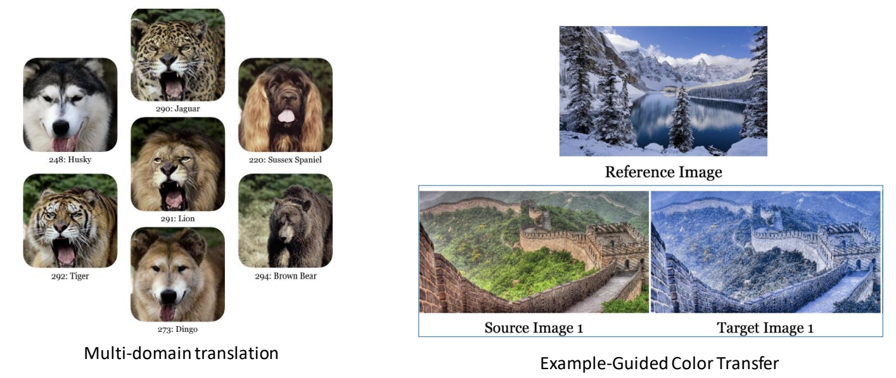 </p>
<p>Su et al., <u>&quot;Dual diffusion implicit bridges for image-to-image translation&quot;,</u> ICLR 2023</p>
<blockquote>
<p>✅ 学习不同颜色空间的 transform</p>
</blockquote>
<p>P21</p>
<h2 id="diffedit-diffusion-based-semantic-image-editing-with-mask-guidance"><a class="header" href="#diffedit-diffusion-based-semantic-image-editing-with-mask-guidance">DiffEdit: Diffusion-based semantic image editing with mask guidance</a></h2>
<p>Couairon et al., <u>&quot;DiffEdit: Diffusion-based semantic image editing with mask guidance&quot;, </u>ICLR 2023</p>
<h3 id="任务目标"><a class="header" href="#任务目标">任务目标</a></h3>
<blockquote>
<p>SDEdit要求用户对想更新的区域打MASK。</p>
</blockquote>
<p>Instead of asking users to provide the mask, the model will generate the mask itself based on the caption and query.</p>
<p>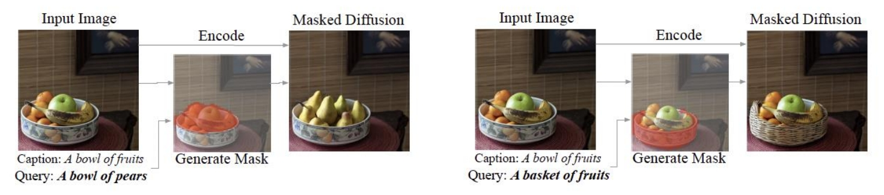 </p>
<blockquote>
<p>✅ 作者认为让用户打 MASK 比较麻烦，因此生成 MASK</p>
</blockquote>
<p>P22</p>
<h3 id="pipeline-4"><a class="header" href="#pipeline-4">Pipeline</a></h3>
<p></p>
<p>P23</p>
<h3 id="效果-1"><a class="header" href="#效果-1">效果</a></h3>
<p></p>
<blockquote>
<p>生成质量高且与原始相似度高。</p>
</blockquote>
<p>P24</p>
<h2 id="imagic-text-based-real-image-editing-with-diffusion-models"><a class="header" href="#imagic-text-based-real-image-editing-with-diffusion-models">Imagic: Text-Based Real Image Editing with Diffusion Models</a></h2>
<p>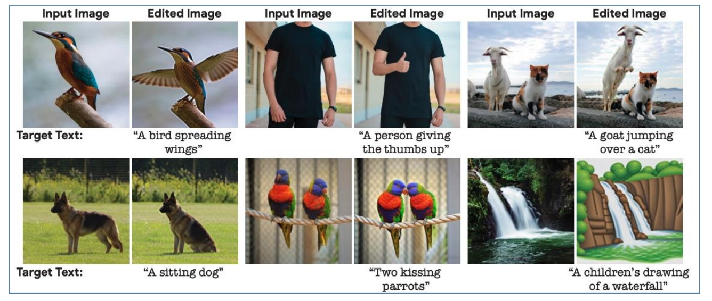 </p>
<p>Kawar et al., <u>&quot;Imagic: Text-Based Real Image Editing with Diffusion Models&quot;,</u> CVPR 2023</p>
<blockquote>
<p>✅ 对内容进行复杂修改，但对不相关部分保留。</p>
</blockquote>
<p>P25</p>
<h3 id="pipeline-5"><a class="header" href="#pipeline-5">Pipeline</a></h3>
<blockquote>
<p>输入：Origin Image和target text promt</p>
</blockquote>
<p>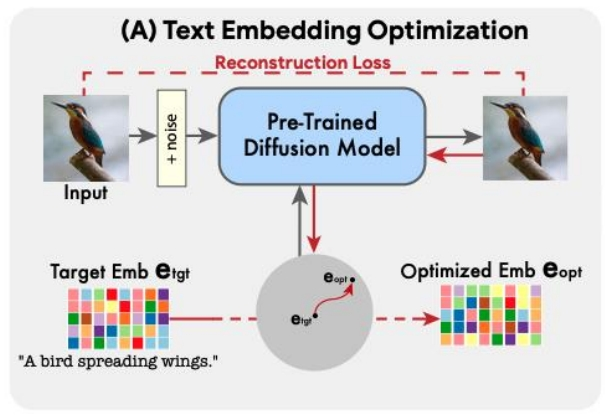</p>
<blockquote>
<p>✅ Step 1： 对 target text 作 embedding，得到init text embedding \(e_{tgt}\)。然后优化init text embedding，使得Pre-Trained Diffusion Model可以根据Optimized text embedding \(e_{opt}\) 重建出Origin Image。</p>
</blockquote>
<p>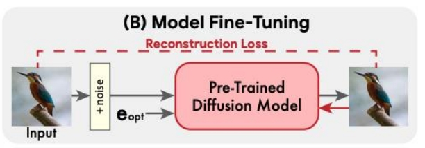</p>
<blockquote>
<p>✅ Step 2： 用 Optimized text embedding \(e_{opt}\) 重建 Origin Image，这一步会 finetune diffusion model。</p>
</blockquote>
<p>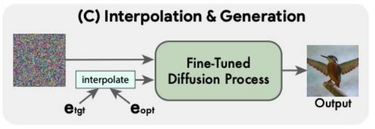</p>
<blockquote>
<p>✅ Step 3：用finetuned diffusion model生成target Image。其中condition为\(e_{tgt}\)和\(e_{opt}\)的插值。</p>
</blockquote>
<p>P26</p>
<h3 id="效果-2"><a class="header" href="#效果-2">效果</a></h3>
<p> </p>
<p>P27</p>
<h2 id="prompt-to-prompt-image-editing-with-cross-attention-control"><a class="header" href="#prompt-to-prompt-image-editing-with-cross-attention-control">Prompt-to-Prompt Image Editing with Cross-Attention Control</a></h2>
<p></p>
<blockquote>
<p>✅ 基于标题的图像编辑 (1) 修改某个单词的影响力；(2) 替换单词；(3) 添加单词；</p>
</blockquote>
<p>Hertz et al., <u>&quot;Prompt-to-Prompt Image Editing with Cross-Attention Control&quot;, </u>ICLR 2023</p>
<p>P28</p>
<h3 id="pipeline-6"><a class="header" href="#pipeline-6">Pipeline</a></h3>
<p></p>
<blockquote>
<p>✅ 控制生成过程中的 attention maps。其具体方法为，在每个step中，把原始图像的 attention map 注入到 diffusion 过程中。<br />
图中上面步骤描述正常的文生图的cross attention设计。<br />
图中下面步骤描述了如何控制cross attention过程中的attention map。三种控制方式分别对应三种图像编辑方法。</p>
</blockquote>
<p>P29</p>
<h3 id="效果-3"><a class="header" href="#效果-3">效果</a></h3>
<p>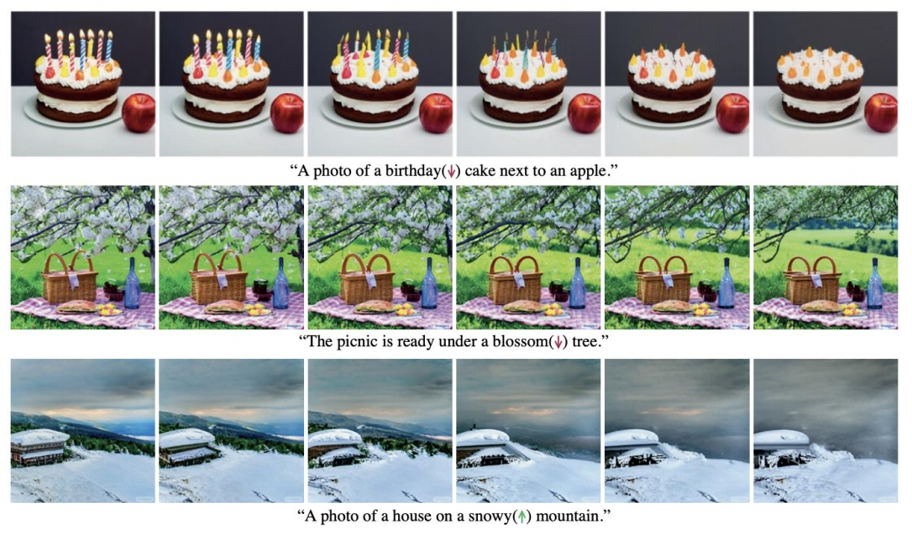</p>
<p>P30</p>
<h2 id="instructpix2pix-learning-to-follow-image-editing-instructions"><a class="header" href="#instructpix2pix-learning-to-follow-image-editing-instructions">InstructPix2Pix: Learning to Follow Image Editing Instructions</a></h2>
<p>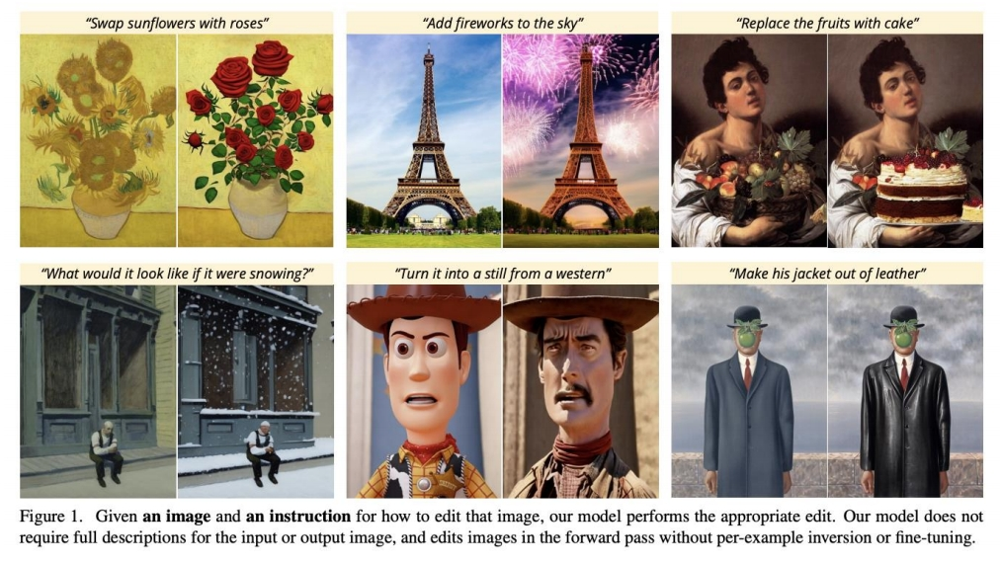</p>
<p>Brooks et al., <u>&quot;Instructpix2pix: Learning to follow image editing instructions”,</u> CVPR 2023</p>
<blockquote>
<p>控制特点：不需要完整的控制文本，只需要告诉模型要怎么修改图像。<br />
✅ 优势：只修改推断过程，不需针对图像做 finetune.</p>
</blockquote>
<p>P31</p>
<h3 id="pipeline-7"><a class="header" href="#pipeline-7">Pipeline</a></h3>
<p>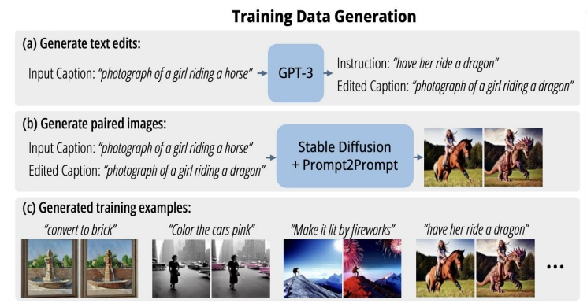</p>
<blockquote>
<p>生成Image Editing Dataset：<br />
Step a：微调GPT-3，用于生成Instruction和Edited Caption。<br />
Step b：使用预训练模型生成pair data。</p>
</blockquote>
<p>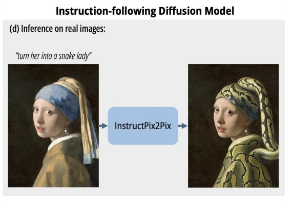</p>
<blockquote>
<p>✅ [?]只是文本引导方式做了改变，哪里体现 pix 2 呢？</p>
</blockquote>
<p>P32</p>
<h2 id="personalization-with-diffusion-models"><a class="header" href="#personalization-with-diffusion-models">Personalization with diffusion models</a></h2>
<p> </p>
<blockquote>
<p>✅ 基于目标的多张 reference，输入文本，生成包含目标的图像。要求生成的结果与refernce一致，且具有高质量和多样性：</p>
</blockquote>
<p> </p>
<p>Ruiz et al., <u>&quot;DreamBooth: Fine Tuning Text-to-Image Diffusion Models for Subject-Driven Generation&quot;,</u> CVPR 2023</p>
<p>P34</p>
<h3 id="pipeline-8"><a class="header" href="#pipeline-8">Pipeline</a></h3>
<p></p>
<blockquote>
<p>✅ 使用 reference image 微调 model，具体方法为：<br />
✅ 输入多张reference image，使用包含特定 identifier 的文本构造 pairdata。目的是对输入图像做 encode。<br />
✅ 同时使用用不含 identifer 的图像和文本调练，构造重建 loss 和对抗 loss.目的是生成的多样性及防止过拟合。</p>
</blockquote>
<p>P35</p>
<h3 id="dreambooth-results"><a class="header" href="#dreambooth-results">DreamBooth Results</a></h3>
<p></p>
<blockquote>
<p>Input Image的基本特征保持住了，但是细节还是有些丢失。比如书包右下角的三个贴图，在每个生成里面都不一样。</p>
</blockquote>
<p>P36</p>
<h3 id="dreambooth-applications"><a class="header" href="#dreambooth-applications">DreamBooth Applications</a></h3>
<p> </p>
<blockquote>
<p>用来生成动作照片还是可以的，因为人对动画的细节差异没有那么敏感。例如这只猫。额头上的花纹，在每张图像上都不一样。如果用来生成人，会发明显的差异。</p>
</blockquote>
<p>P37</p>
<h2 id="textual-inversion-optimizing-text-embedding"><a class="header" href="#textual-inversion-optimizing-text-embedding">Textual Inversion: Optimizing Text Embedding</a></h2>
<p> </p>
<blockquote>
<p>✅ 输入3-5张reference iamge。可以把内容、风格、动作等编辑为 \(S_ {\ast }\)<br />
✅ 用一个 word 来 Encode 源，因此称为 Textual Inversion.</p>
</blockquote>
<p>Gal et al., <u>&quot;An Image is Worth One Word: Personalizing Text-to-Image Generation using Textual Inversion&quot;,</u> ICLR 2023</p>
<p>P38</p>
<h3 id="pipeline-9"><a class="header" href="#pipeline-9">Pipeline</a></h3>
<p> </p>
<blockquote>
<p>✅ 输入带 holder world 的 String，(1) 转为 token (2) token 转为“连续的表示”，即 embedding. (3) embedding 转为 conditional code，用于引导生成模型。<br />
✅ 通过生成的结果与GT比较，构造重建loss来优化 embedding.</p>
</blockquote>
<p>P39</p>
<h3 id="textual-inversion-results"><a class="header" href="#textual-inversion-results">Textual Inversion Results</a></h3>
<p> </p>
<p>P40<br />
Works well for artistic styles</p>
<p> </p>
<p>P41</p>
<h2 id="low-rank-adaptation-lora"><a class="header" href="#low-rank-adaptation-lora">Low-rank Adaptation (LoRA)</a></h2>
<ul>
<li>Lora: Low-rank adaptation of large language models</li>
</ul>
<blockquote>
<p>✅ 要解决的问题：finetune 所需的训练时间、参数存储，Computation 的成本很高。</p>
</blockquote>
<p> </p>
<blockquote>
<p>✅ 解决方法：仅仅拟合residual model 而不是 finetune entire model.<br />
残差通常可以用low rank Matrix来拟合，因为称为low-rank adaptation。</p>
</blockquote>
<p>Lora [Edward J. Hu\(^\ast \), Yelong Shen\(^\ast \), et al., ICLR 2022]<br />
Lora + Dreambooth (by Simo Ryu): <a href="https://github.com/cloneofsimo/lora">https://github.com/cloneofsimo/lora</a></p>
<h3 id="lora-results"><a class="header" href="#lora-results">LoRA Results</a></h3>
<blockquote>
<p>✅ LoRA对数据集要求少，收敛速度快。可以极大提升 finetune 效率，也更省空间。</p>
</blockquote>
<p>P43</p>
<h2 id="multi-concept-customization-of-text-to-image-diffusion"><a class="header" href="#multi-concept-customization-of-text-to-image-diffusion">Multi-Concept Customization of Text-to-Image Diffusion</a></h2>
<p>Kumari et al., <u>&quot;Multi-Concept Customization of Text-to-Image Diffusion&quot;,</u> CVPR 2023</p>
<h3 id="finetune的性能问题"><a class="header" href="#finetune的性能问题">finetune的性能问题</a></h3>
<blockquote>
<p>要解决的问题与上一篇相同，即finetune 所需的训练时间、参数存储，Computation 的成本很高。
但解决方法有些区别。上一篇通过增加额外的残差模块，而这一篇通过只finetune原始模型的部分参数。</p>
</blockquote>
<p>P45</p>
<h4 id="analyze-change-in-weights"><a class="header" href="#analyze-change-in-weights">Analyze change in weights</a></h4>
<blockquote>
<p>✅ 选择模型的部分参数进行 finetune．问题是怎么选择？<br />
作者通过分析模型各参数的重要性，insights 应该 finetune 哪些参数。</p>
</blockquote>
<p> </p>
<blockquote>
<p>✅ Cross-Attn 层用于结合图像和文本的特征。<br />
✅ Self-Attn 用于图像内部。<br />
✅ Other 主要是卷积和 Normalization.<br />
✅ 通过比较 pretrained 模型和 finetune 模型，change 主要发生成Cross-Attn 层，说明 Cross-Attn 层在 finetune 过程中更重要！</p>
</blockquote>
<p>P46</p>
<h4 id="only-fine-tune-cross-attention-layers"><a class="header" href="#only-fine-tune-cross-attention-layers">Only fine-tune cross-attention layers</a></h4>
<p></p>
<blockquote>
<p>✅ 由以上观察结果，finetune 时只更新 K 和 V 的参数。</p>
</blockquote>
<p>P47</p>
<h3 id="how-to-prevent-overfitting"><a class="header" href="#how-to-prevent-overfitting">How to prevent overfitting?</a></h3>
<blockquote>
<p>用少量的数据finetune整个模型，容易造成过拟合。<br />
✅ 解决方法：通过在训练过程中引入一个正则化项来防止过拟合</p>
</blockquote>
<p></p>
<blockquote>
<p>✅ 从large scale image dataset中选择一些所标注文本与左图文本相似度比较高的图像。这些图像与文本的pair data用于计算正则化项。</p>
</blockquote>
<p>P48</p>
<h3 id="personalized-concepts"><a class="header" href="#personalized-concepts">Personalized concepts</a></h3>
<h4 id="要解决的问题"><a class="header" href="#要解决的问题">要解决的问题</a></h4>
<blockquote>
<p>✅ 目的：finetune SD 得到这只狗的文生图模型。</p>
</blockquote>
<p>How to describe personalized concepts?</p>
<p></p>
<blockquote>
<p>但只有少量的关于这只狗的数据。</p>
</blockquote>
<h4 id="解决方法"><a class="header" href="#解决方法">解决方法</a></h4>
<p>定义 V\(^\ast \) 为 modifier token in the text embedding space，例如：</p>
<blockquote>
<p>解决方法：定义 \(V^ \ast \) 为 modifier token，并把它作为一个新的 token.</p>
</blockquote>
<p>V\(^\ast \) <strong>dog</strong></p>
<p>P49</p>
<h4 id="pileline"><a class="header" href="#pileline">Pileline</a></h4>
<p>Also fine-tune the modifier token V\(^\ast \) that describes the personalized concept</p>
<p></p>
<blockquote>
<p>✅ 把 \(V^ \ast \) 代入 caption，并用这只狗的数据做 finetune。同样只更新 K 和 V.</p>
</blockquote>
<p>P50</p>
<h4 id="single-concept-results"><a class="header" href="#single-concept-results">Single concept results</a></h4>
<p></p>
<p>P51</p>
<h3 id="multiple-new-concepts"><a class="header" href="#multiple-new-concepts">Multiple new concepts?</a></h3>
<h4 id="要解决的问题-1"><a class="header" href="#要解决的问题-1">要解决的问题</a></h4>
<p></p>
<blockquote>
<p>要生成同时包含moongate与这只狗的图像</p>
</blockquote>
<p>P52</p>
<h4 id="joint-training"><a class="header" href="#joint-training">Joint training</a></h4>
<p>Combine the training dataset of multiple concepts</p>
<p></p>
<blockquote>
<p>✅ 同时使用两个小样本数据 finetune，且使用 modifier token 和正则化图像，可以得到二者结合的效果。</p>
</blockquote>
<p>P53</p>
<h4 id="two-concept-results"><a class="header" href="#two-concept-results">Two concept results</a></h4>
<p></p>
<blockquote>
<p>✅ 也可以同时引入2个 modifier token．</p>
</blockquote>
<p>P54</p>
<h3 id="two-concept-results-1"><a class="header" href="#two-concept-results-1">Two concept results</a></h3>
<p> </p>
<p>Kumari et al., <u>&quot;Multi-Concept Customization of Text-to-Image Diffusion&quot;,</u> CVPR 2023</p>
<p>P55</p>
<h2 id="key-locked-rank-one-editing-for-text-to-image-personalization"><a class="header" href="#key-locked-rank-one-editing-for-text-to-image-personalization">Key-Locked Rank One Editing for Text-to-Image Personalization</a></h2>
<p></p>
<blockquote>
<p>Image Personalization任务</p>
</blockquote>
<p>Tewel et al., <u>&quot;Key-Locked Rank One Editing for Text-to-Image Personalization&quot;,</u> SIGGRAPH 2023</p>
<h4 id="主要原理"><a class="header" href="#主要原理">主要原理</a></h4>
<blockquote>
<p>✅ 方法：dynamic rank one update.<br />
✅ Perffusion 解决 Image Personalization 的 overfitting 问题的方法：<br />
✅ (1) 训练时，Introducing new <em>xxxx</em> that locks the new concepts cross-attention keys to their sub-ordinate category.<br />
✅ (2) 推断时，引入 a gate rank one approach 可用于控制 the learned concept的影响力。<br />
✅ (3) 允许 medel 把不同的 concept 结合到一起，并学到不同concept 之间的联系。</p>
</blockquote>
<h4 id="results"><a class="header" href="#results">Results</a></h4>
<blockquote>
<p>可以很好地model the interaction of the two conception。</p>
</blockquote>
<p>P56</p>
<h2 id="t2i-adapter-learning-adapters-to-dig-out-more-controllable-ability-for-text-to-image-diffusion-models"><a class="header" href="#t2i-adapter-learning-adapters-to-dig-out-more-controllable-ability-for-text-to-image-diffusion-models">T2I-Adapter: Learning Adapters to Dig out More Controllable Ability for Text-to-Image Diffusion Models</a></h2>
<p></p>
<blockquote>
<p>通过引入一个额外的apapter来增加对已有文生图模型的控制方法。</p>
</blockquote>
<p>Mou et al., <u>&quot;T2I-Adapter: Learning Adapters to Dig out More Controllable Ability for Text-to-Image Diffusion Models&quot;,</u> arXiv 2023</p>
<h3 id="pipeline-10"><a class="header" href="#pipeline-10">Pipeline</a></h3>
<p></p>
<blockquote>
<p>✅ Adapter 包含4个 feature extraction blocks 和3个 down sample blocks. 其中4个feature extraction block对应4个新增加的控制方法。3次降采样，对应于 UNET 的不同 Level.</p>
</blockquote>
<h3 id="优点"><a class="header" href="#优点">优点</a></h3>
<blockquote>
<p>这个方法具有以下优点：</p>
</blockquote>
<ul>
<li>Plug-and-play. Not affect original network topology and generation ability</li>
</ul>
<blockquote>
<p>易使用</p>
</blockquote>
<ul>
<li>Simple and small. ~77M parameters and ~300M storage</li>
</ul>
<blockquote>
<p>简单、易训</p>
</blockquote>
<ul>
<li>Flexible. Various adapters for different control conditions</li>
<li>Composable.  Several adapters to achieve multi-condition control</li>
</ul>
<blockquote>
<p>不同的adaper可以combine，成为新的guidance。</p>
</blockquote>
<ul>
<li>Generalizable. Can be directly used on customed models</li>
</ul>
<p>P57</p>
<h3 id="result"><a class="header" href="#result">Result</a></h3>
<p></p>
<blockquote>
<p>✅ Adapter 可以使用于多种形式的 Control．</p>
</blockquote>
<p>P58</p>
<h2 id="adding-conditional-control-to-text-to-image-diffusion-models-controlnet"><a class="header" href="#adding-conditional-control-to-text-to-image-diffusion-models-controlnet">Adding Conditional Control to Text-to-Image Diffusion Models (ControlNet)</a></h2>
<h3 id="controlnet"><a class="header" href="#controlnet">ControlNet</a></h3>
<blockquote>
<p>✅ Control Net 是一种通过引入额外条件来控制 Diffusion Model 的网络架构。</p>
</blockquote>
<p> </p>
<blockquote>
<p>✅ (a) 是预训练的 diffusion model. C 是要添加的新的condition.<br />
✅ 把 (a) 的网络复制一份，finetune copy 的网络，结果叠加。<br />
✅ Zero Convolution：1-1 卷积层，初始的 \(w\) 和 \(b\) 都为 0．</p>
</blockquote>
<p>Zhang and Agrawala, <u>&quot;Adding Conditional Control to Text-to-Image Diffusion Models&quot;,</u> arXiv 2023</p>
<p>P59</p>
<h3 id="control-net-应用到-stable-diffusion-的例子"><a class="header" href="#control-net-应用到-stable-diffusion-的例子">Control Net 应用到 Stable Diffusion 的例子</a></h3>
<h4 id="pipeline-11"><a class="header" href="#pipeline-11">Pipeline</a></h4>
<p></p>
<p>P60</p>
<h4 id="train-objective"><a class="header" href="#train-objective">Train objective</a></h4>
<p>$$
\mathcal{L} =\mathbb{E} _ {\mathbb{z}_0,t,\mathbf{c} _ t,\mathbf{c} _ f,\epsilon \sim \mathcal{N} (0,1)}[||\epsilon -\epsilon _\theta (\mathbf{z} _ t,t,\mathbf{c} _ t,\mathbf{c}_f)||^2_2] 
$$</p>
<p>where t is the time step, \(\mathbf{c} _t\) is the text prompts, \(\mathbf{c} _ f\) is the task-specific conditions</p>
<blockquote>
<p>需要（x, cf, ct）的pair data。</p>
</blockquote>
<p>P61</p>
<h3 id="controlnet-result"><a class="header" href="#controlnet-result">ControlNet Result</a></h3>
<p> </p>
<p>P62</p>
<p> </p>
<p>P63</p>
<p> </p>
<p>P64</p>
<h2 id="gligen-open-set-grounded-text-to-image-generation"><a class="header" href="#gligen-open-set-grounded-text-to-image-generation">GLIGEN: Open-Set Grounded Text-to-Image Generation</a></h2>
<p> </p>
<p>Li et al., <u>&quot;GLIGEN: Open-Set Grounded Text-to-Image Generation&quot;,</u> CVPR 2023</p>
<blockquote>
<p>✅ GLIGEN 是另一种网络架构。</p>
</blockquote>
<p>P65</p>
<h3 id="pipeline-12"><a class="header" href="#pipeline-12">Pipeline</a></h3>
<p>GLIGEN对比ControlNet：</p>
<table><thead><tr><th>GLIGEN</th><th>ControlNet</th></tr></thead><tbody>
<tr><td></td><td></td></tr>
<tr><td>✅ 新增 Gated Self-Attention 层，加在 Attention 和 Cross Attention 之间。<br> ✅ GLIGEN 把 Condition 和 init feature 作 Concat</td><td>✅ Control Net 分别处理 feature 和 Control 并把结果叠加。</td></tr>
</tbody></table>
<p>P66</p>
<h3 id="gligen-result"><a class="header" href="#gligen-result">GLIGEN Result</a></h3>
<p></p>
<p>P67</p>
<h1 id="other-applications"><a class="header" href="#other-applications">Other applications</a></h1>
<p>P68</p>
<h2 id="your-diffusion-model-is-secretly-a-zero-shot-classifier"><a class="header" href="#your-diffusion-model-is-secretly-a-zero-shot-classifier">Your Diffusion Model is Secretly a Zero-Shot Classifier</a></h2>
<blockquote>
<p>✅ 一个预训练好的 diffusion model （例如stable diffusion model），无须额外训练可以用作分类器，甚至能完成 Zero-shot 的分类任务。</p>
</blockquote>
<p>Li et al., <u>&quot;Your Diffusion Model is Secretly a Zero-Shot Classifier&quot;,</u> arXiv 2023</p>
<h3 id="pipeline-13"><a class="header" href="#pipeline-13">Pipeline</a></h3>
<p></p>
<blockquote>
<p>✅ 输入图像\(x\)，用随机噪声\(\epsilon  \)加噪；再用 condition c 预测噪声 \(\epsilon  _\theta \)。优化条件 C 使得 \(\epsilon  _\theta \) 最接近 \(\epsilon \). 得到的 C 就是分类。</p>
</blockquote>
<p>P69</p>
<h2 id="improving-robustness-using-generated-data"><a class="header" href="#improving-robustness-using-generated-data">Improving Robustness using Generated Data</a></h2>
<blockquote>
<p>✅ 使用 diffusion Model 做数据增强。</p>
</blockquote>
<p></p>
<p><strong>Overview of the approach:</strong></p>
<ol>
<li>train a generative model and a non￾robust classifier, which are used to provide pseudo-labels to the generated data.</li>
<li>The generated and original training data are combined to train a robust classifier.</li>
</ol>
<p>Gowal et al., <u>&quot;Improving Robustness using Generated Data&quot;,</u> NeurIPS 2021</p>
<p>P70</p>
<h2 id="better-diffusion-models-further-improve-adversarial-training"><a class="header" href="#better-diffusion-models-further-improve-adversarial-training">Better Diffusion Models Further Improve Adversarial Training</a></h2>
<p></p>
<p>Wang et al., <u>&quot;Better Diffusion Models Further Improve Adversarial Training&quot;,</u> ICML 2023</p>
<p>P72</p>
<h1 id="reference"><a class="header" href="#reference">Reference</a></h1>
<ul>
<li>Bao et al., <u>&quot;All are Worth Words: a ViT Backbone for Score-based Diffusion Models&quot;,</u> arXiv 2022</li>
<li>Peebles and Xie, <u>&quot;Scalable Diffusion Models with Transformers&quot;,</u> arXiv 2022</li>
<li>Bao et al., <u>&quot;One Transformer Fits All Distributions in Multi-Modal Diffusion at Scale&quot;,</u> arXiv 2023</li>
<li>Jabri et al., <u>&quot;Scalable Adaptive Computation for Iterative Generation&quot;,</u> arXiv 2022</li>
<li>Hoogeboomet al., <u>&quot;simple diffusion: End-to-end diffusion for high resolution images&quot;,</u> arXiv 2023</li>
<li>Meng et al., <u>&quot;SDEdit: Guided Image Synthesis and Editing with Stochastic Differential Equations&quot;,</u> ICLR 2022</li>
<li>Li et al., <u>&quot;Efficient Spatially Sparse Inference for Conditional GANs and Diffusion Models&quot;,</u> NeurIPS 2022</li>
<li>Avrahami et al., <u>&quot;Blended Diffusion for Text-driven Editing of Natural Images&quot;,</u> CVPR 2022</li>
<li>Hertz et al., <u>&quot;Prompt-to-Prompt Image Editing with Cross-Attention Control&quot;,</u> ICLR 2023</li>
<li>Kawar et al., <u>&quot;Imagic: Text-Based Real Image Editing with Diffusion Models&quot;,</u> CVPR 2023</li>
<li>Couairon et al., <u>&quot;DiffEdit: Diffusion-based semantic image editing with mask guidance&quot;,</u> ICLR 2023</li>
<li>Sarukkai et al., <u>&quot;Collage Diffusion&quot;,</u>  arXiv 2023</li>
<li>Bar-Tal et al., <u>&quot;MultiDiffusion: Fusing Diffusion Paths for Controlled Image Generation&quot;,</u>  ICML 2023</li>
<li>Gal et al., <u>&quot;An Image is Worth One Word: Personalizing Text-to-Image Generation using Textual Inversion&quot;,</u> ICLR 2023</li>
<li>Ruiz et al., <u>&quot;DreamBooth: Fine Tuning Text-to-Image Diffusion Models for Subject-Driven Generation&quot;,</u> CVPR 2023</li>
<li>Kumari et al., <u>&quot;Multi-Concept Customization of Text-to-Image Diffusion&quot;,</u>  CVPR 2023</li>
<li>Tewel et al., <u>&quot;Key-Locked Rank One Editing for Text-to-Image Personalization&quot;,</u>  SIGGRAPH 2023</li>
<li>Zhao et al., <u>&quot;A Recipe for Watermarking Diffusion Models&quot;,</u>  arXiv 2023</li>
<li>Hu et al., <u>&quot;LoRA: Low-Rank Adaptation of Large Language Models&quot;,</u> ICLR 2022</li>
<li>Li et al., <u>&quot;GLIGEN: Open-Set Grounded Text-to-Image Generation&quot;,</u> CVPR 2023</li>
<li>Avrahami et al., <u>&quot;SpaText: Spatio-Textual Representation for Controllable Image Generation&quot;,</u> CVPR 2023</li>
<li>Zhang and Agrawala, <u>&quot;Adding Conditional Control to Text-to-Image Diffusion Models&quot;,</u> arXiv 2023</li>
<li>Mou et al., <u>&quot;T2I-Adapter: Learning Adapters to Dig out More Controllable Ability for Text-to-Image Diffusion Models&quot;,</u> arXiv 2023</li>
<li>Orgad et al., <u>&quot;Editing Implicit Assumptions in Text-to-Image Diffusion Models&quot;,</u> arXiv 2023</li>
<li>Han et al., <u>&quot;SVDiff: Compact Parameter Space for Diffusion Fine-Tuning&quot;,</u> arXiv 2023</li>
<li>Xie et al., <u>&quot;DiffFit: Unlocking Transferability of Large Diffusion Models via Simple Parameter￾Efficient Fine-Tuning&quot;,</u> rXiv 2023</li>
<li>Saharia et al., <u>&quot;Palette: Image-to-Image Diffusion Models&quot;,</u> SIGGRAPH 2022</li>
<li>Whang et al., <u>&quot;Deblurring via Stochastic Refinement&quot;,</u> CVPR 2022</li>
<li>Xu et al., <u>&quot;Open-Vocabulary Panoptic Segmentation with Text-to-Image Diffusion Models&quot;,</u> arXiv 2023</li>
<li>Saxena et al., <u>&quot;Monocular Depth Estimation using Diffusion Models&quot;,</u> arXiv 2023</li>
<li>Li et al., <u>&quot;Your Diffusion Model is Secretly a Zero-Shot Classifier&quot;,</u> arXiv 2023</li>
<li>Gowal et al., <u>&quot;Improving Robustness using Generated Data&quot;,</u> NeurIPS 2021</li>
<li>Wang et al., <u>&quot;Better Diffusion Models Further Improve Adversarial Training&quot;,</u> ICML 2023</li>
</ul>
<hr />
<blockquote>
<p>本文出自CaterpillarStudyGroup，转载请注明出处。</p>
<p>https://caterpillarstudygroup.github.io/ImportantArticles/</p>
</blockquote>

                    </main>

                    <nav class="nav-wrapper" aria-label="Page navigation">
                        <!-- Mobile navigation buttons -->
                            <a rel="prev" href="../diffusion-tutorial-part/Fundamentals/Summary.html" class="mobile-nav-chapters previous" title="Previous chapter" aria-label="Previous chapter" aria-keyshortcuts="Left">
                                <i class="fa fa-angle-left"></i>
                            </a>
                            <a rel="next" href="../diffusion-tutorial-part/diffusiontutorialpart3.html" class="mobile-nav-chapters next" title="Next chapter" aria-label="Next chapter" aria-keyshortcuts="Right">
                                <i class="fa fa-angle-right"></i>
                            </a>
                        <div style="clear: both"></div>
                    </nav>
                </div>
            </div>

            <nav class="nav-wide-wrapper" aria-label="Page navigation">
                    <a rel="prev" href="../diffusion-tutorial-part/Fundamentals/Summary.html" class="nav-chapters previous" title="Previous chapter" aria-label="Previous chapter" aria-keyshortcuts="Left">
                        <i class="fa fa-angle-left"></i>
                    </a>
                    <a rel="next" href="../diffusion-tutorial-part/diffusiontutorialpart3.html" class="nav-chapters next" title="Next chapter" aria-label="Next chapter" aria-keyshortcuts="Right">
                        <i class="fa fa-angle-right"></i>
                    </a>
            </nav>

        </div>

        <script type="text/javascript">
            window.playground_copyable = true;
        </script>
        <script src="../elasticlunr.min.js" type="text/javascript" charset="utf-8"></script>
        <script src="../mark.min.js" type="text/javascript" charset="utf-8"></script>
        <script src="../searcher.js" type="text/javascript" charset="utf-8"></script>
        <script src="../clipboard.min.js" type="text/javascript" charset="utf-8"></script>
        <script src="../highlight.js" type="text/javascript" charset="utf-8"></script>
        <script src="../book.js" type="text/javascript" charset="utf-8"></script>

        <!-- Custom JS scripts -->
        <script type="text/javascript" src="../theme/pagetoc.js"></script>
    </body>
</html>
